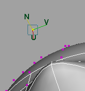

，或按 W 键。有关详细信息，请参见
，或按 W 键。有关详细信息，请参见- 拖动操纵器的中心，或者使用鼠标中键在屏幕任意位置上进行拖动，以在三条轴方向上移动。
- 拖动操纵器控制柄，或使用鼠标中键将选定的操纵器控制柄拖动到任意位置，以在单个轴方向上移动。
- 在“组件模式”(Component Mode)中按住 Shift 键并拖动以便挤出（请参见挤出多边形面、边或顶点）。
- 在“对象模式”(Object Mode)中按住 Shift 键并拖动以便复制（请参见复制）。
- 在“组件模式”(Component Mode)中同时按住 Ctrl 和 Shift 键并拖动，以便沿边滑动组件（请参见沿边滑动组件）。
双击“移动工具”(Move Tool)图标，可在“工具设置”(Tool Settings)面板中显示其选项，如下所述。
移动设置(Move Settings)
- 轴方向(Axis Orientation)
-
为“移动工具”(Move Tool)指定坐标系。提示： 使用鼠标中键单击
 按钮，可在最后两个选定方向模式之间切换。
按钮，可在最后两个选定方向模式之间切换。
- 对象(Object)
-
在对象空间坐标系中移动对象。轴方向包括对象本身的旋转。如果选中了多个对象，则每个对象会相对于其自己的对象空间坐标系，移动相同的量。
- 世界(World)
-
（默认）在世界空间坐标系中移动。对象将与世界空间轴对齐。
- 组件(Component)
-
沿使用组件特性（如法线）计算的平均局部参考帧移动选定的组件。
选定对象后，在对象空间坐标系中移动该对象。
- 父对象(Parent)
-
将对象与父对象的旋转对齐。移动受局部空间坐标系中这些轴约束。该对象将对齐到父对象的旋转，但不包括对象本身的旋转。如果选中了多个对象，则每个对象会相对于其自己的对象空间坐标系，移动相同的量。
- 法线(Normal)
-
在曲面的 U 向或 V 向移动选定的顶点或 CV。通常，应针对小型的 CV 集使用此选项。操纵器将指示曲面法线、U 方向和 V 方向。
选择“法线”(Normal)时，将显示“更新 [UVN] 三轴架”(Update [UVN] Triad)复选框。启用该选项后，此选项将导致操纵器方向反映移动的曲面，而不是原始曲面。这是默认设置。禁用此选项后，该操纵器将保留原始曲面的方向。
- 沿旋转轴(Along Rotation Axis)
- 与对象中“旋转工具”(Rotate Tool)的轴对齐。如果已将对象“变换属性”(Transform Attributes)中的“旋转轴”(Rotate Axis)设置为不同的值（这将使对象方向相对于对象局部旋转轴的方向发生偏移），则该属性将产生效果。否则，“沿旋转轴”(Along Rotation Axis)的效果将与“对象”(Object)的效果相同。
- 沿激活对象的轴(Along Live Object Axis)
-
（该设置不可与“反射”(Reflection)结合使用。） 设置“移动工具”(Move Tool)来沿活动对象的轴移动对象。通常用户会激活构造平面，但实际上所有对象均可以激活。如果有一个激活的对象且已选择该选项，则“移动工具”(Move Tool)的移动箭头将对齐到激活的构造平面。（激活对象的几何体并不重要；移动始终会对齐到激活对象的轴。）
- 自定义(Custom)
-
可以设置自定义方向。激活自定义枢轴编辑模式时，将自动选择“自定义”(Custom)轴方向。编辑枢轴的方向时，偏移坐标会更新。请参见激活自定义枢轴编辑模式。
通过单击“自定义”(Custom)轴字段旁边的 并选择以下选项之一，可以使“移动工具”(Move Tool)的 X 轴面向场景中的组件：
提示： 使用鼠标中键单击 按钮，可激活上次选定的选项。
-
设置为对象(Set to Object)：将“移动工具”(Move tool)设置为沿其他对象的轴方向移动选定的对象。
- 设定为组件(Set To Component)：将“移动工具”(Move tool)设置为沿通过选择任何组件而定义的轴移动选定的对象。
- 设置为点(Set To Point)：将“移动工具”(Move tool)设置为沿通过选择点而定义的轴移动选定的对象。
- 设置为边(Set To Edge)：将“移动工具”(Move tool)设置为沿通过选择边而定义的轴移动选定的对象。
- 设置为面(Set To Face)：将“移动工具”(Move tool)设置为沿通过选择面而定义的轴移动选定的对象。
- 重置(Reset)：将自定义轴字段重置为 0。
-
- 枢轴(Pivot)
- 编辑枢轴(Edit Pivot)
-
激活自定义枢轴编辑模式。请参见激活自定义枢轴编辑模式。
- 重置(Reset)
-
重置自定义枢轴的位置和方向。请参见更改枢轴点。
- 位置(Position)
-
启用此选项后，将枢轴位置捕捉到选定组件。默认情况下，枢轴位置捕捉处于启用状态。
- 方向(Orientation)
-
启用此选项后，将枢轴方向捕捉到选定组件。默认情况下，枢轴方向捕捉处于启用状态。
- 固定组件枢轴(Pin Component Pivot)
-
启用此选项后，会将对自定义枢轴的编辑锁定在原地，允许您使用同一自定义枢轴对同一网格或其他网格上的组件进行变换。请参见固定自定义枢轴。
在组件选择更改、对象选择更改期间以及切换到“对象”(Object)选择模式时，枢轴固定将保持锁定状态。
注： 枢轴固定仅在已设置自定义枢轴时可用。请参见更改枢轴点。 - 烘焙枢轴方向(Bake Pivot Orientation)
-
启用此选项后，在进行任何枢轴方向更改时，系统会立即将更改保存到选定对象的变换。
- 显示方向控制柄(Show Orientation Handle)
-
确定是否在枢轴编辑模式下显示旋转控制。禁用此选项可避免在仅希望移动枢轴时意外重新确定枢轴的方向。
- 枢轴重置(Pivot Reset)
 确定单击“重置”(Reset)按钮时如何重置自定义枢轴的位置和方向。从下列选项中进行选择：
确定单击“重置”(Reset)按钮时如何重置自定义枢轴的位置和方向。从下列选项中进行选择：- 使枢轴居中(Center Pivot)：（默认）将枢轴重置到对象边界框的中心。
- 置零枢轴(Zero Pivot)：将枢轴重置到对象的原点。
- 变换约束(Transform Constraint)
-
允许您沿活动网格的边或曲面滑动组件。
可以在建模工具包(Modeling Toolkit)或任何变换工具的工具设置中启用变换约束。
提示： 使用鼠标中键单击 按钮可在上次选定的变换约束和“禁用”(Off)之间切换。
- 禁用(Off)
- （默认）禁用变换约束。允许您使用“移动工具”(Move Tool)在没有约束的情况下平移组件。
- 边(Edge)
- 允许您沿活动对象的边滑动选定组件。滑动多边形边。
- 曲面(Surface)
- 允许您在活动对象的曲面上滑动选定组件。请参见沿曲面移动多边形组件。
注： 您也可以使用“激活”(Make Live)将工具约束到曲面。例如，您可以使用“激活”(Make Live)将“四边形绘制”(Quad Draw)工具约束到要重新拓扑的网格的曲面。“激活”(Make Live)处于活动状态期间，变换约束会遭到禁用。有关重新拓扑的详细信息，请参见使用四边形绘制重新拓扑网格。
- 沿法线(Along Normals)
-
（默认）启用此选项后，“移动工具”(Move Tool)沿法线方向（而不是使用最接近曲面的点）将点捕捉到曲面。启用“沿法线”(Along Normals)可产生预期的滑动行为，并防止点弹出网格的曲面。注： “沿法线”(Along Normals)仅适用于“变换约束”(Transform Constraint)选项。
- 最近点(Closest Point)
-
启用此选项后，在曲面上滑动组件时，将沿最近点的方向移动组件。注： “最近点”(Closest Point)仅适用于“变换约束”(Transform Constraint)选项。
- 步长捕捉(Step Snap)
-
允许您在移动对象的同时保持相对间距。如果平移时无需保持相对间距，请禁用此选项。选择“相对”(Relative)，然后输入一个值，以确定对象按增量移动时的移动量。
在 Maya 2015 和先前版本中，“步长捕捉”(Step Snap)称为“步长”(Step Size)，且仅当启用“离散移动”(Discrete Move)时才可用。
提示： 使用鼠标中键单击 按钮，可在“相对”(Relative)和“禁用”(Off)之间切换。
- 保留子对象(Preserve Children)
-
启用此选项后，移动父对象后不移动其子对象。
注： 在 Maya 2015 和先前版本中，“保留子对象”(Preserve Children)称为“保持子对象变换”(Preserve Child Transform)。 - 保持 UV(Preserve UVs)
-
选择该选项之后，移动场景视图中的组件时，会导致对应的 UV 移动到相应的 UV 空间中。最终结果是纹理不会变得扭曲。
- 调整模式(Tweak mode)
-
允许您快速移动组件，在场景中放置对象，并调整特定的网格。请参见在调整模式下移动组件。注： 如果在“调整模式”(Tweak mode)中将“显示操纵器工具”(Show Manipulator tool)的活动控制柄设置为特定轴，则激活的控制柄将保持相同的轴，即使您选择多个面。如果要使用具有中心控制柄的“调整模式”(Tweak mode)，则使中心控制柄变为默认控制柄。
关节方向设置
- 自动确定关节方向(Automatically Orient Joints)
-
启用此选项后，关节偏移值将在骨架中移动关节时自动更新，以确保父关节点正确地朝向第一个子关节。
另请参见移动关节。
方向设置(Orientation Settings)
移动捕捉设置(Move Snap Settings)
使用以下设置，您可以在平移时捕捉到多边形面的中心和顶点。
- 保留组件间距(Retain Component Spacing)
-
在默认情况下处于启用状态。这意味着 Maya 移动组件时，相对间距不变。如果在转换和捕捉多边形组件时不希望保留相对间距，则禁用此选项。
- “捕捉到激活的多边形”(Snap to Live Polygon) —“面中心”(Face Center)或“顶点”(Vertex)
-
使用这些设置，您可以移动和捕捉到活动的多边形组件（面中心和顶点）。请参见使用激活的对象捕捉。
公用选择选项(Common Selection Options)
请参见选择工具(Select Tool)。软选择(Soft Selection)
请参见软选择设置。
对称设置(Symmetry Settings)
智能复制设置(Smart Duplicate Settings)
- 按住 Shift 键并拖动以复制对象(Shift+Drag to Duplicate Objects)
-
用于指定在“对象”(Object)模式中按住 Shift 键并拖动操纵器是否会复制选定对象。
- 按住 Shift 键并拖动以挤出组件(Shift+Drag to Extrude Components)
-
用于指定在“组件”(Component)模式中按住 Shift 键并拖动操纵器是否会挤出选定组件。
- 几何体类型(Geometry Type)
-
确定启用“按住 Shift 键并拖动以复制对象”(Shift+Drag to Duplicate Objects)时创建的重复类型。有关详细信息，请参见副本与实例。